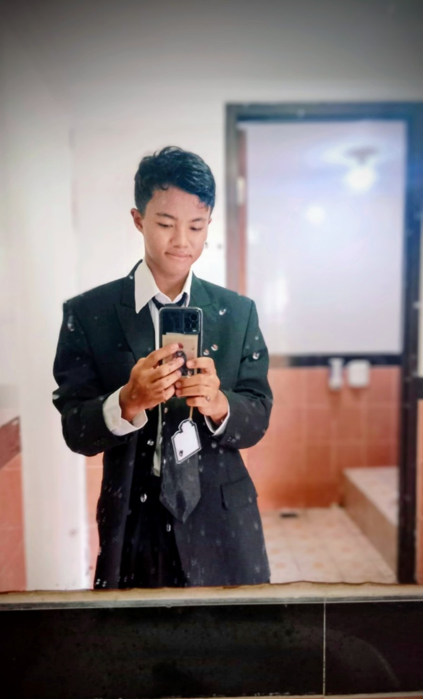

01
C++ Programming
Mempelajari dasar pemrograman C++ untuk memahami logika, struktur program, dan cara menyelesaikan masalah melalui kode.
SEDANG DIKEMBANGKANMahasiswa Informatika yang suka menjelajahi ide baru, dari dunia teknologi sampai luasnya semesta: bintang, planet, nebula, dan misteri black hole.

01 / ABOUT ME
Kenalan dengan penjelajah kecil yang sedang merakit masa depannya, satu ide dalam satu waktu.
Aku adalah mahasiswa semester 1 Program Studi Informatika di Universitas Negeri Surabaya. Saat ini aku sedang memulai perjalanan akademik dan membangun fondasi untuk berkembang di bidang teknologi informasi.
Muhammad Rafi Firdaus Prasetiyo
NIM26051204244
Universitas Negeri Surabaya
Program Studi Informatika · Semester 1
MULAI KULIAH2026
02 / WHAT I CAN DO
Kemampuan akan terus bertambah seiring proses belajar. Bagian ini bisa kamu perbarui sesuai skill yang benar-benar sudah kamu kuasai.
Mempelajari dasar pemrograman C++ untuk memahami logika, struktur program, dan cara menyelesaikan masalah melalui kode.
SEDANG DIKEMBANGKANMembuat rancangan antarmuka menggunakan Figma dengan memperhatikan tata letak, warna, dan kenyamanan pengguna.
PENGALAMAN DESAINMengedit foto atau video dan mengolah elemen visual untuk menghasilkan konten yang menarik.
PENGALAMAN KREATIF03 / ACHIEVEMENT
Pencapaian tidak harus selalu berupa penghargaan besar. Kamu bisa menambahkan sertifikat, kompetisi, atau proyek yang sudah selesai.
Memulai perjalanan sebagai mahasiswa Program Studi Informatika di Universitas Negeri Surabaya.
Terlibat dalam kepanitiaan lomba SMASA CUP Se-Madura pada bagian dokumentasi dan keamanan.
Memiliki pengalaman membuat desain antarmuka menggunakan Figma sebagai bagian dari eksplorasi desain digital.
Memiliki pengalaman mengedit foto atau video untuk mengembangkan kemampuan pengolahan visual.
04 / CONTACT
Ini adalah orbit kecil tempat aku mengumpulkan proses belajar, ide, dan proyek. Temukan aku di GitHub atau LinkedIn.
Kembali ke atas